Fallo eléctrico, pérdida de red, interrupción del software
y la operación se paraliza.
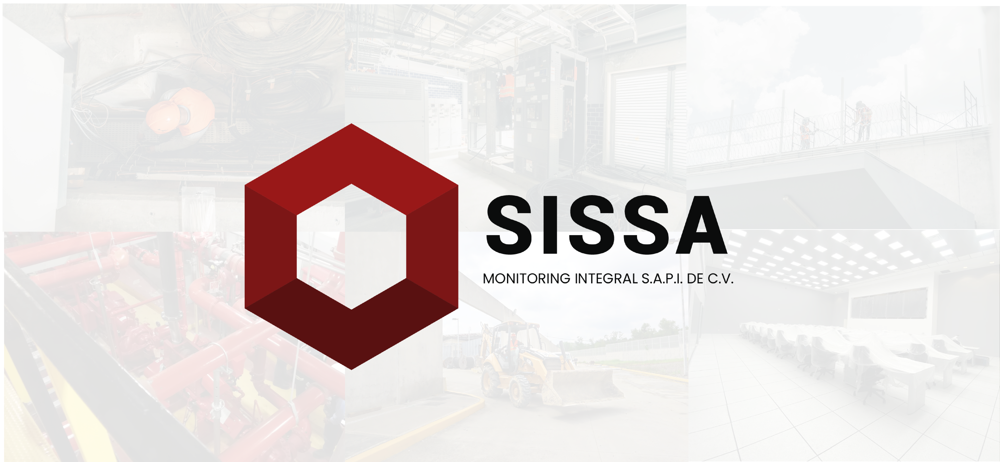
La seguridad real no se construye con servicios aislados.
Se diseña desde la infraestructura crítica y se ejecuta con tecnología integrada.
En SISSA, cada división forma parte de un ecosistema interconectado que opera
como un solo sistema: inteligente, confiable y preparado para responder en entornos de alta exigencia.
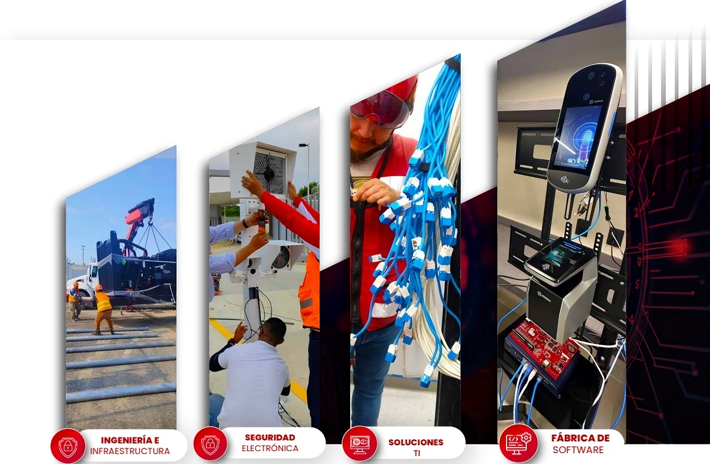
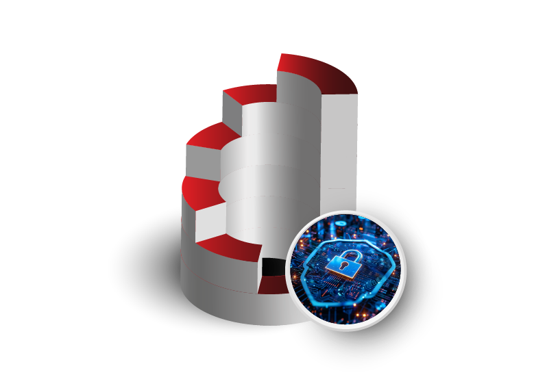
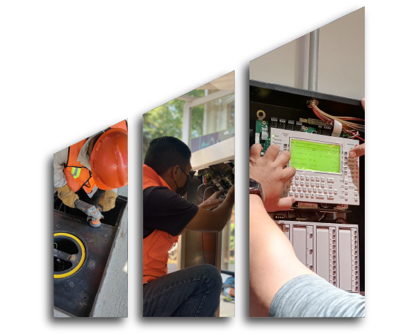
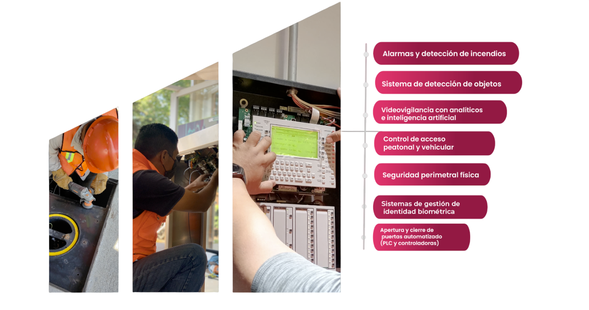
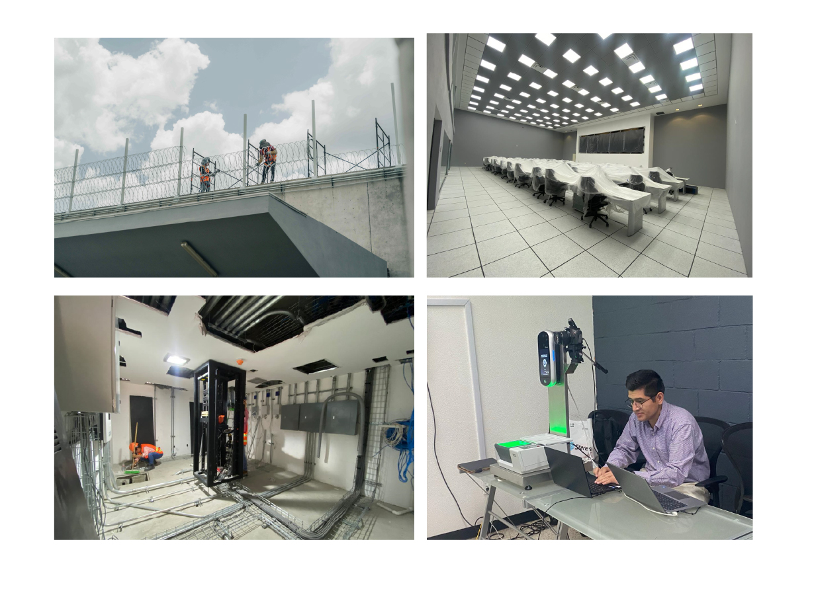
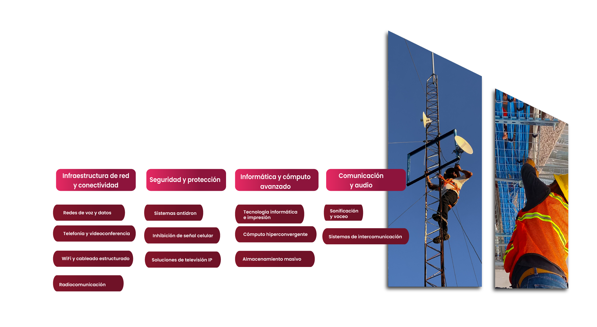
Suministro ininterrumpido, respaldo confiable y protección ante descargas. Sin energía estable, no hay operación segura.
Tecnología avanzada para identificar objetos no autorizados en áreas protegidas.
Temperatura y humedad bajo control para preservar la salud del personal y la funcionalidad de equipos críticos
Soluciones integrales que cumplen normas y salvan vidas. Detección, contención y supresión de fuego sin margen de error.
Suministro ininterrumpido, respaldo confiable y protección ante descargas. Sin energía estable, no hay operación segura
Suministro ininterrumpido, respaldo confiable y protección ante descargas. Sin energía estable, no hay operación segura.
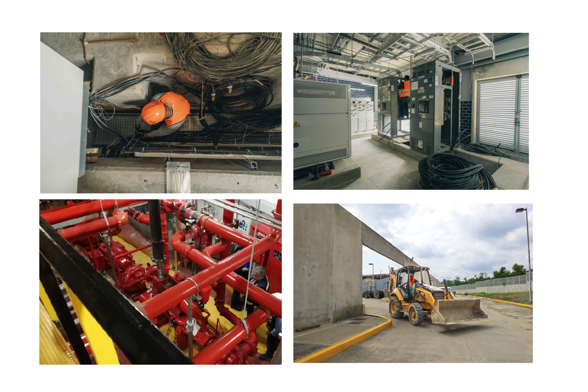
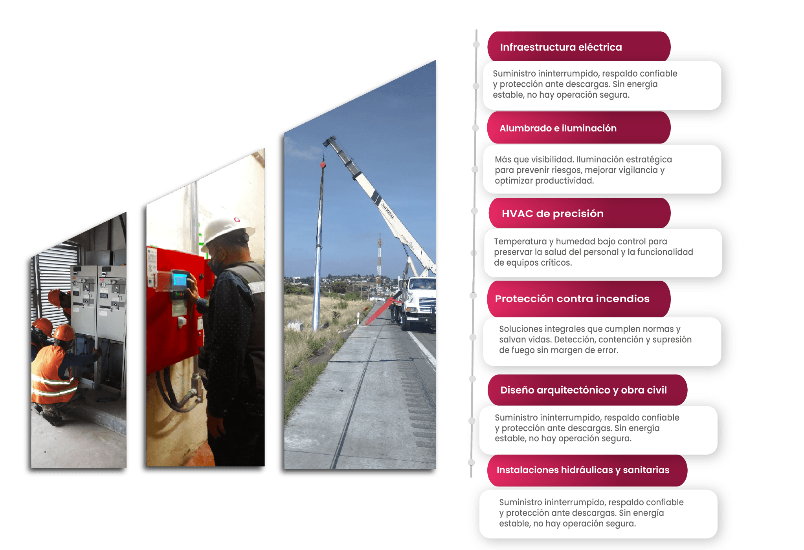
Una solución robusta para administrar el ingreso físico y lógico a tus instalaciones y sistemas.
¿El resultado? Máximo control, mínima vulnerabilidad
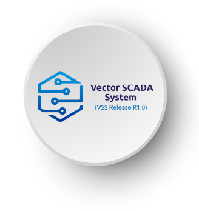
¿El resultado? Visibilidad completa, decisiones inteligente, seguridad garantizada.
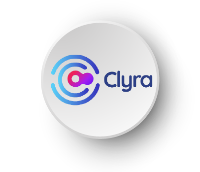
¿El resultado? Conexión total, respuesta rápida, protección continua.
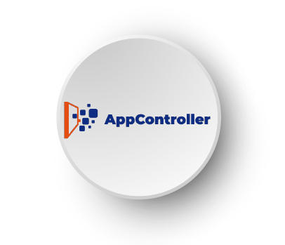
¿El resultado? Procesos organizados, errores mínimos y operación optimizada.
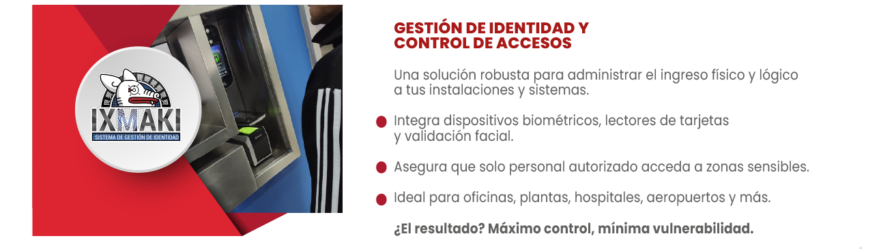
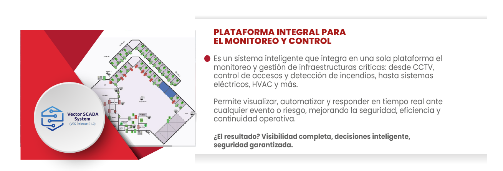
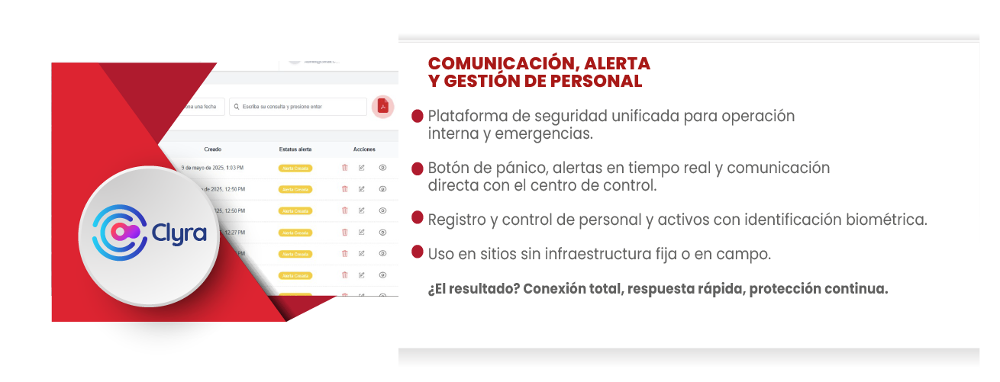
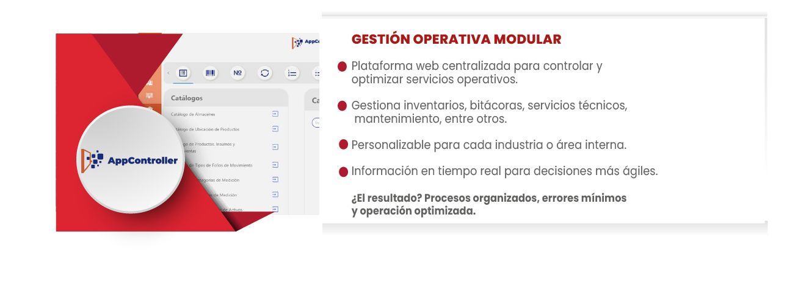
Creamos aplicaciones web y móviles diseñadas 100% a la medida.
Para gestión interna, comunicación, seguridad o cualquier necesidad operativa.
Desarrollo ágil, seguro y con visión de escalabilidad.
¿El resultado? Una solución única, para un reto único.
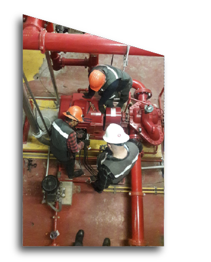
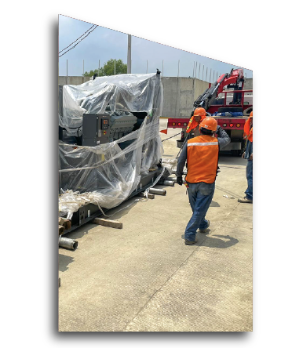